Editable Blender and GLB, matching the selected cabbed concept. Actual GLB mesh renders below; no runtime integration.
Editable Blender · Runtime GLB · Builder handoff · Reimport checks
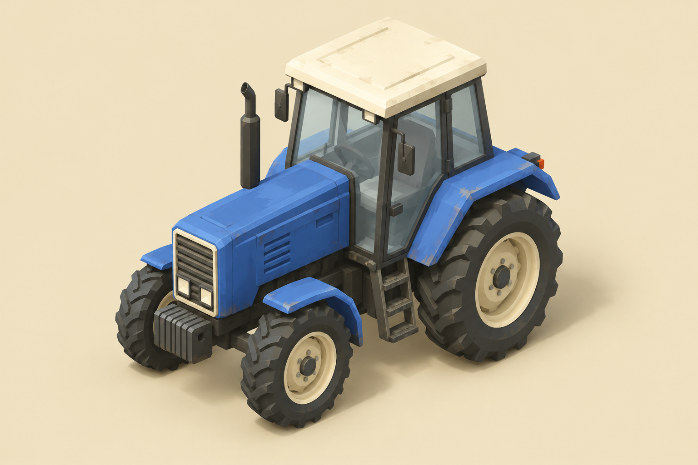
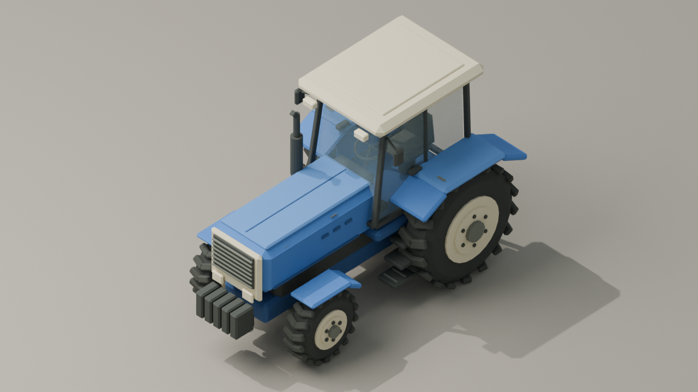
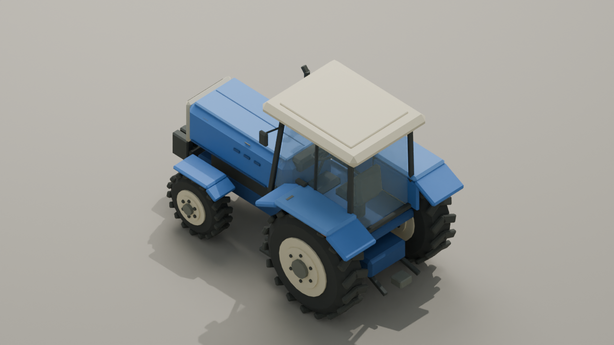
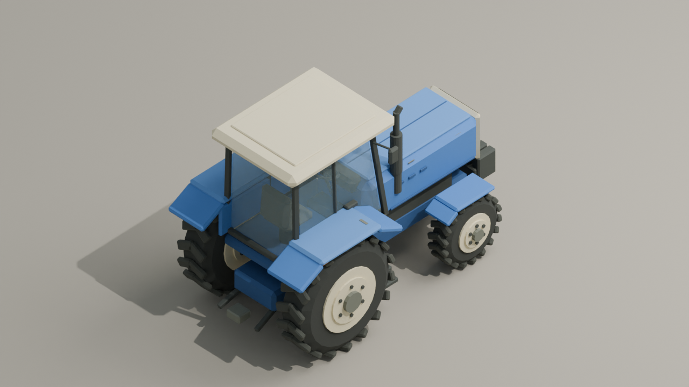
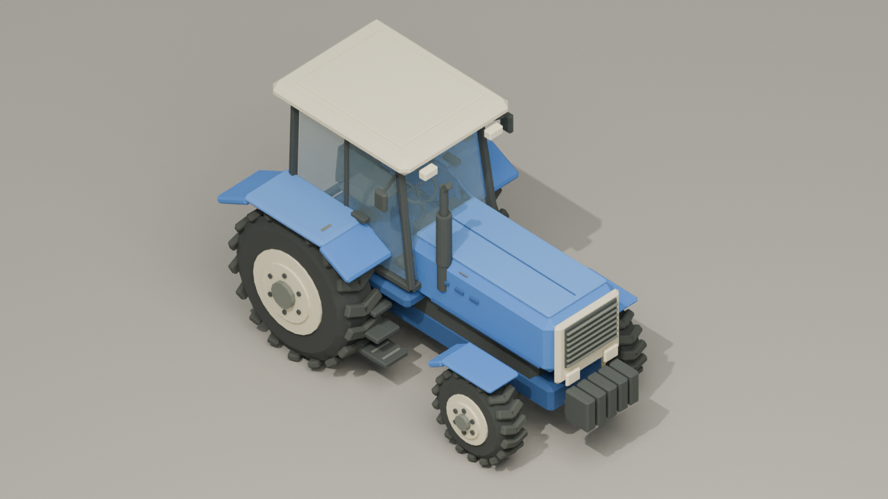
Current barn mesh, conversion sign/kit absent. Left: solid roof. Right: review approximation of the existing fade. At close game zoom, roof extremes can leave frame. The tractor remains opaque; cab windows use alpha.
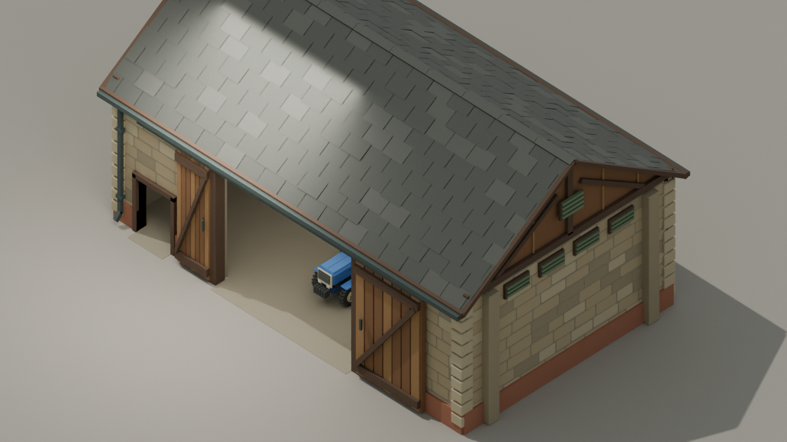
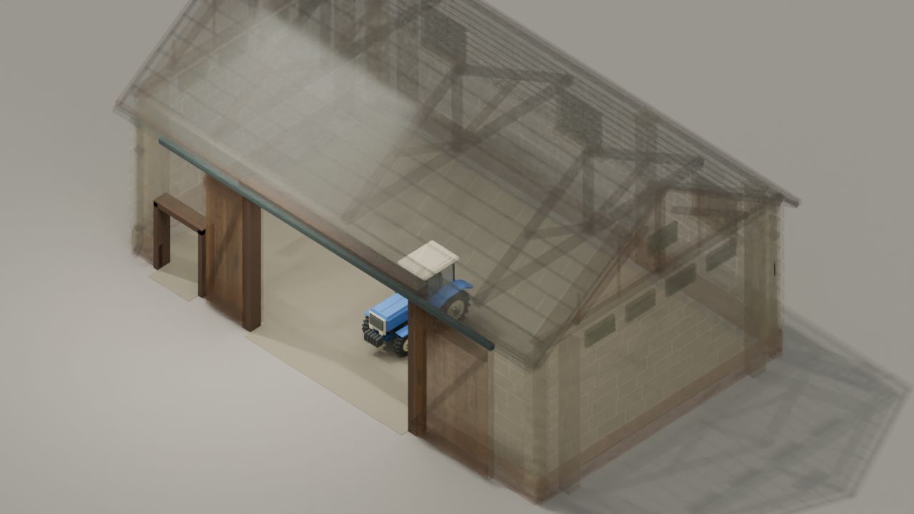
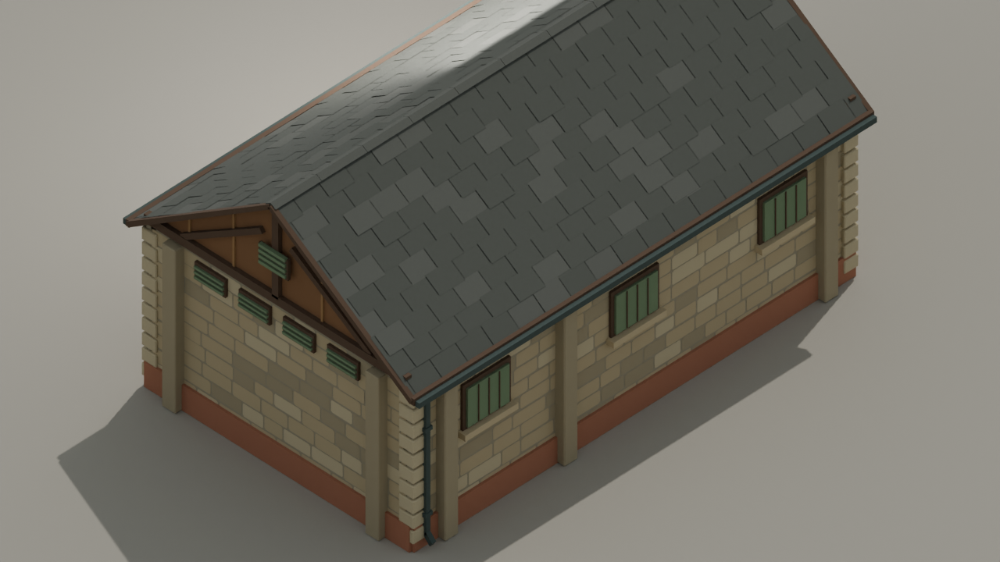
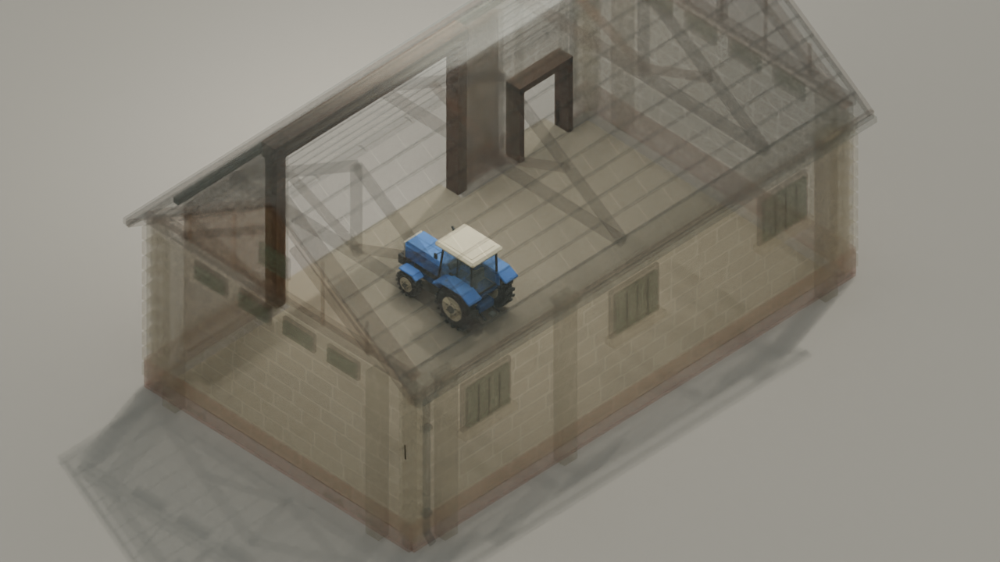
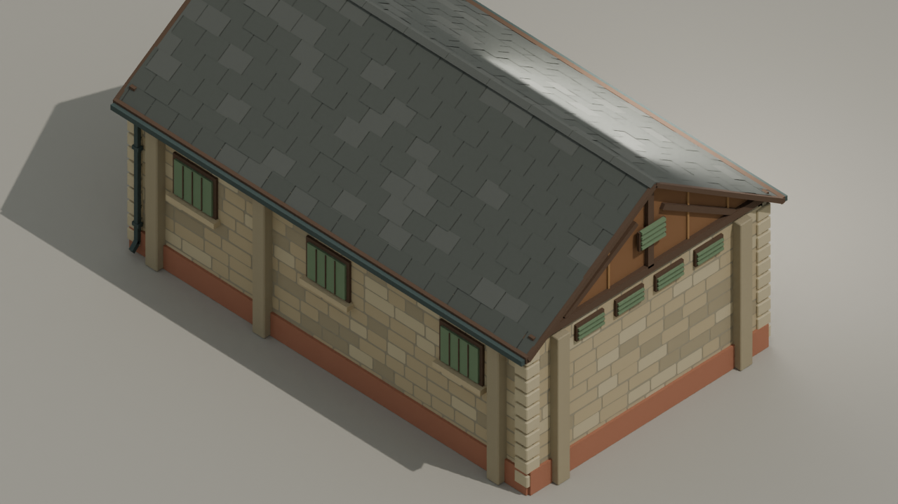
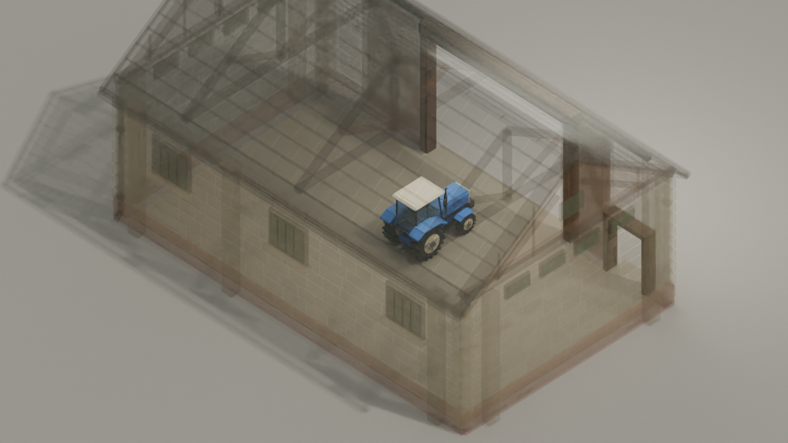
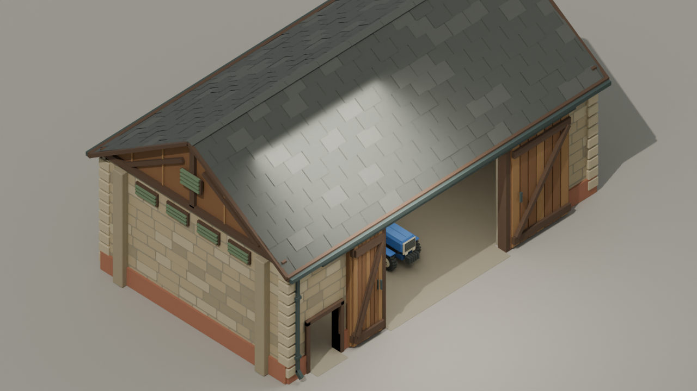
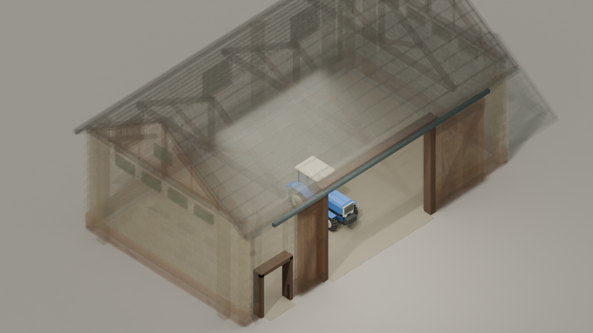
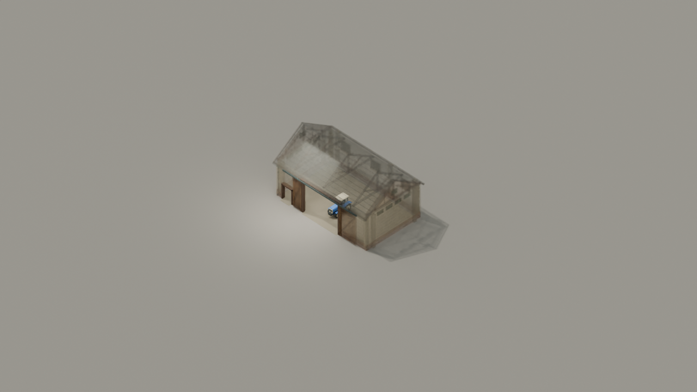
The tractor is small at default site zoom. Solid roof/eaves obscure it from some directions. Native Godot transparency and lighting still require Builder verification.